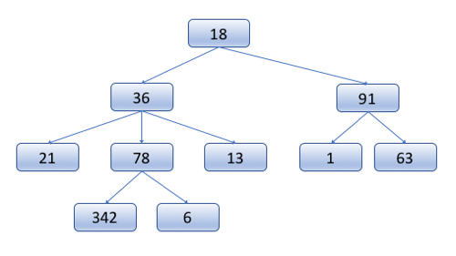
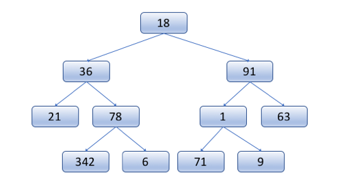
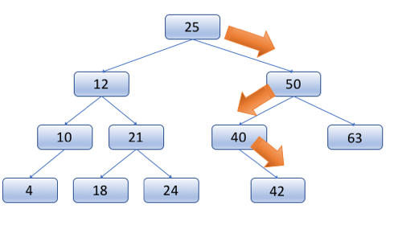
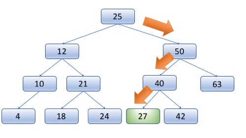
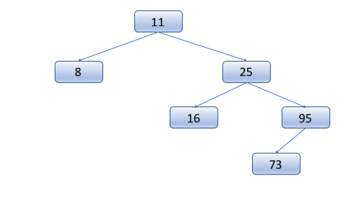
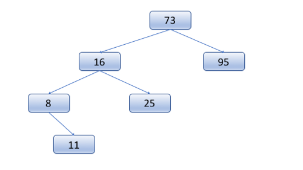
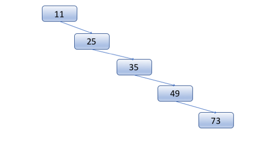

08 Prove : Homework - Data Structures
Trees
Outcomes
At the end of this study, successful students will be able to:
Articulate the strengths and weaknesses of trees.
Use trees in Python to solve problems.
Overview
This week, we will be discussing the tree data structure. Trees are a very important and commonly used data structure in computer science. To prepare for our discussion, you need to read over several things to get the basic ideas.
Preparation Material
First, become familiar with basic terminology, by reading the the following sections from the Wikipedia article on Trees:
The introduction
Definition
Terminology used in trees (this is a list of the terms)
Terminology (this is a different section a little further down)
Trees
Trees provide a way of organizing our data hierarchically, where we have root node at the top, and then every node in the tree can have its own child nodes. In discrete math terms, we could refer to this as a Directed Acyclic Graph (DAG), because their is a direction implied from parents to children and the tree cannot contain cycles, or loops, where a child contains as a child its own parent or grandparent.
We can store any type of data that we would like in the tree, including our own complex classes. The node data structure itself contains the data, and then a list of child nodes.
| TreeNode |
|---|
| data |
| child_nodes : TreeNode[] |
In a tree, there is no limit to the number of children a single node can have, and no requirement as to how things are organized. In order to find a node in a tree, you may need to traverse the entire tree to see if it is there.
There are lots of examples of trees in computers, consider for example a file system directory structure.
In summary, the essential elements of a Tree are:
Each node can have 0 or more children
There are no cycles
The program keeps track of the root node, and all others can be found starting from that point.
Binary Trees
A useful limitation to place on trees (as we shall see later) is to restrict each node to have at most two children. These trees are called Binary Trees.
Typically, in a binary tree, we refer to the children as the "left child" and the "right child." And the node data structure could be defined as:
| BinaryTreeNode |
|---|
| data |
| left : BinaryTreeNode |
| right : BinaryTreeNode |
Because binary trees do not specify anything about the ordering of elements in the tree, in order to find something, in the worst case, you have to traverse through all the nodes of the tree: O(n) time complexity.
Binary trees have all the properties of Trees, with the following additional restriction:
Binary Tree nodes may have 0, 1, or 2 children.
Binary Search Trees
Binary trees become more interesting when we add one further restriction, namely that the value of the data stored by a node must be greater than everything in its left subtree, and less than everything in its right subtree. This restriction of ordering makes this a Binary Search Tree (BST).
The ordering restriction is very important, because it makes it so that we can find things efficiently in the tree. For example, consider finding the element 42 in the following tree:
Starting at the root, we can check to see if it is our value (42). Because it's not a match, we must look down the left or right subtree, but because of the ordering restriction, we know that 42 could not be in the left subtree, so we can rule all of those nodes out, and focus exclusively on the right sub tree.
We then check the next node, and go right or left depending on the whether our value is less than or greater than the node in question. If we make it to the end of the tree and didn't find the correct node, then we know that it is not in the tree, because if it were, we would have found it.
As with finding a node in the tree, inserting a node into the tree also has a defined pattern, and there is only one place that it can be inserted. Consider the following illustration of adding 27 into the tree.
This is important. When adding a node to a tree, there is exactly one place where it can go.
On the other hand, the order that we add items is important. Consider adding the values 11, 25, 8, 16, 95, 73 in that order to produce the following tree:
If the same numbers were added in this order, 73, 95, 16, 8, 25, 11, then we would instead see this tree:
Both of these trees are valid BST's for that data, but they show the difference of inserting the data in a different order.
In summary, Binary Search Trees have all the properties of Binary Trees, with one additional restriction:
A nodes value must be greater than all those in the left subtree and less than all those in the right subtree.
Balanced Binary Search Trees
Because of the ordering restriction of a Binary Search Tree, it is easy to find an item, without having to look through every node in the tree. However, consider the following valid binary search tree:
This is a valid BST, but in essence it is a linked list, and finding an element in this tree still requires O(n) time in the worst case. On the other hand, as long as the tree is relatively balanced, at each step, we could rule out half of the nodes, and then half again:
The result of this is that if the tree is balanced, we can find items in O(log n) time in the worst case. This is a huge improvement!
Balanced Binary Search Trees (Balanced BSTs) add a restriction to BSTs that the height of the two subtrees of a node can differ by at most 1. This does not require the tree to be perfectly complete and symmetric, but it does require it to be fairly evenly balanced.
Maintaining this balance requires a little bit of work. If something ever happens that would cause the tree to get out of balanced, it needs to be rebalanced. The only two operations that can cause this problem are adding to the tree and removing a node from the tree. And in these cases, the only nodes that could possibly be out of balance are the ancestors of those nodes added or deleted. Because of this, we don't have to check every node in the tree for balance each time a change is made, just a small subset of them (O (log n)).
When we find a node that is out of balance, there are clever ways to re-balance them. Two common approaches are Red-Black Trees and AVL Trees. If you are curious about the details of these approaches, you can read up on them further, but it is sufficient for us at this point to know that there are relatively straightforward algorithms that can help us re-balance the tree, and allow it to still have O(log n) insertion, deletion, and retrieval time.
In summary, Balanced Binary Search Trees have all the properties of a Binary Search Tree, with the following additional restriction:
All nodes in a Balanced Binary Search Tree can have a difference of at most 1 in the height of their left and right sub-trees.
Using Trees in Python
Many languages have a built-in library that uses Trees for sets or dictionaries, however in Python hash tables are used for those (which we will learn about later).
Homework Assignment
Use a recursive function to visit each node in a provided tree, and print out the values in order.
Instructions
Follow these steps to guide you through the process:
Begin with the following starter code. It defines a TreeNode class, and constructs a simple binary search tree for you.
The provided code defines a method called "print_tree" that receives the root of the node. Your task is to fill out the body of this method so that it prints out every element of the tree in order. (Please note that the tree has been constructed in order, so you should not need to ever compare any values yourself to see which is less and which is greater, rather follow the branches of the tree appropriately, and it will be done for you.)
Your function should be a recursive function that calls itself on each of the child nodes. Don't forget to include a base case to handle the situation when the function is call on an empty "None" node.
You should not use a for or while loop in your code. Instead, use recursion to accomplish iterating through all of the nodes.
# For this assignment, you just need to implement the print_tree() function
class TreeNode:
"""
This class holds a basic binary tree node
For this assignment, you should not need to change the class.
"""
def __init__(self, data=""):
self.data = data
self.left = None
self.right = None
def construct_tree():
"""
This function constructs a simple balanced binary search tree.
Normally, we would add functions to our tree to be able to automatically insert
the values into the correct places, but for this assignment, this
function will simply construct it manually.
:return:
"""
# You should not need to change anything here
root = TreeNode("50")
root.left = TreeNode("26")
root.left.left = TreeNode("12")
root.left.left.left = TreeNode("8")
root.left.left.right = TreeNode("16")
root.left.right = TreeNode("43")
root.left.right.left = TreeNode("34")
root.left.right.right = TreeNode("46")
root.right = TreeNode("83")
root.right.left = TreeNode("59")
root.right.left.left = TreeNode("56")
root.right.left.right = TreeNode("72")
root.right.right = TreeNode("93")
root.right.right.left = TreeNode("91")
root.right.right.right = TreeNode("99")
return root
def print_tree(node):
"""
This functions should use RECURSION to print out all the nodes of the tree IN ORDER.
:param node:
:return:
"""
# TODO: Put your code here
pass
def main():
"""
Call functions to construct a tree and print it.
:return:
"""
# You should not change anything here.
root = construct_tree()
print_tree(root)
if __name__ == "__main__":
main()
Please note that you can likely find many examples on the Internet that do this, but try to figure it out on your own before turning to them.
Sample Output
8
12
16
26
34
43
46
50
56
59
72
83
91
93
99
Testing your program
An automated testBed script not available for your program. Instead please manually test your program and ensure that it works correctly.
Submission
You are encouraged to work with others on the programming and the quiz.
When you have a good understanding of this data structure and have completed the programming project, take the accompanying I-Learn Quiz. It has questions about how the data structure works, and also, has places for your to report on the parts of the programming assignment that you completed.